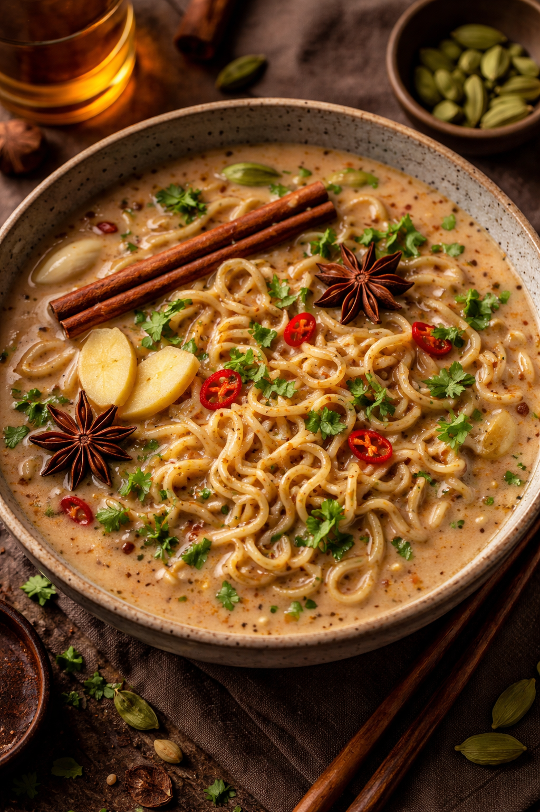

Gulab Jamun Grilled Cheese

Silky noodles swim in a fragrant chai-spiced broth where cardamom, ginger, and cream wrap the palate in warm, aromatic comfort.
Description
Ingredients:
- Ramen noodles
- Water + milk
- Black tea leaves
- Ginger
- Cardamom, cinnamon, cloves
- Sugar (light)
- Chili oil (optional)
Steps:
- Boil water with ginger and whole spices.
- Add tea leaves, then milk and strain.
- Simmer ramen noodles directly in the chai broth.
- Balance with a touch of sugar and salt.
- Finish with chili oil for contrast and serve hot.
RETURN TO RECIPES